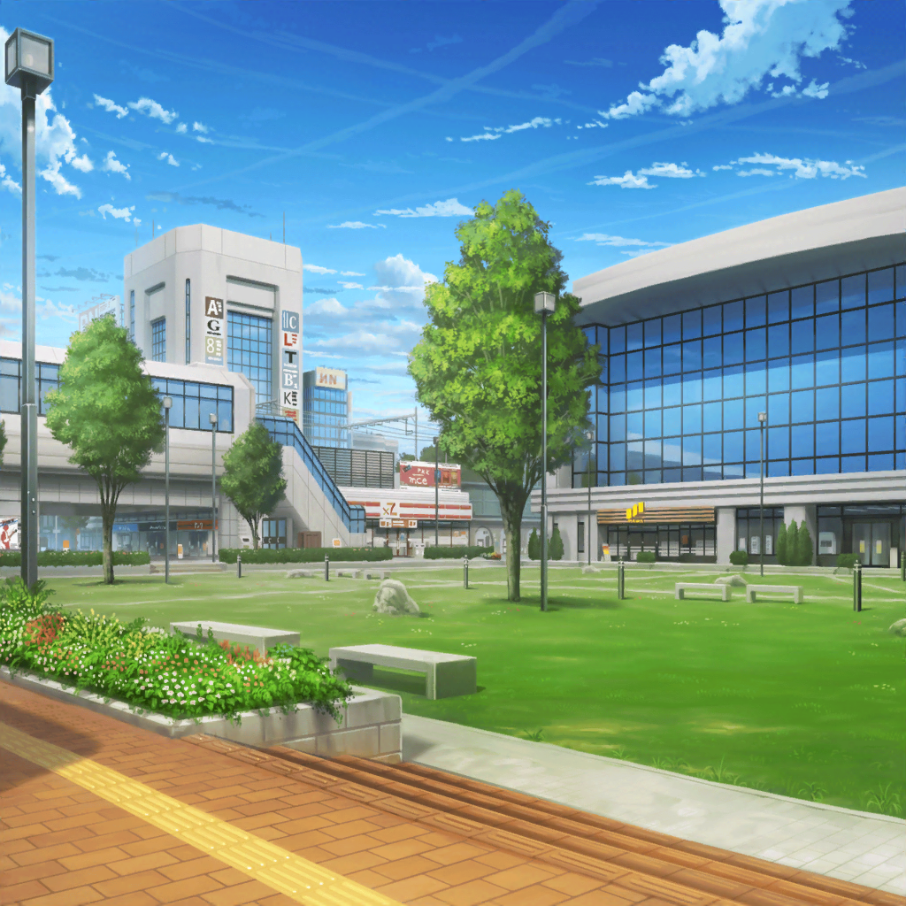

駅前
日菜
{{userName}}さーん！
おーい！ こっちこっちー！
日菜
珍しいね、こんなところで会うなんて
日菜
あ、ちょうどいいやー。
突然だけどちょっと相談に乗ってよ
日菜
旅行に行くんだったら、どこがいいと思う？
日菜
おねーちゃんと一緒に行くんだよ！
でも、無人島はダメって断られちゃってさー
日菜
なんで無人島かって言うとー、この間パスパレのみんなと
テレビロケで行って面白かったから。
おねーちゃんとも一緒に行きたいって思ったのにー
日菜
あ、{{userName}}さん、観てくれたんだ！
ありがとー
日菜
収録？ 楽しかったよー。
麻弥ちゃんが、もう大活躍だったんだ
日菜
あたしは、食べ物探しとかすごく頑張ったんだよ！
日菜
そうそう！
吊り橋のところ、みんな、とっても怖がってたよね！
日菜
ホント面白かったな～、また行きたいな～♪
日菜
でも、おねーちゃん、
無人島だけは嫌、って言ってたしー
日菜
はぁ、おねーちゃんと、２人で無人島とか
絶対楽しいと思うんだけどなー
日菜
でもでも、無人島じゃなかったら、
考えてくれる、って言ってくれたから、
今、旅行の計画を、練ってるところなんだ！
日菜
だから{{userName}}さんも、一緒に考えてよ～！
お願い～！ なんか、るんってくるやつ！
日菜
うんうん、テーマパークは定番だよね。
おねーちゃんと一緒に、観覧車とか乗ったりできそう！
日菜
その調子で、もっと考えてみて！
大丈夫、{{userName}}さんなら思いつくよ！
日菜
なるほど、観光も悪くないかも！
ちょっと修学旅行みたいで、るんってくる！
日菜
……温泉！
それも採用、{{userName}}さん！
日菜
おねーちゃんと、温泉かー。
久しぶりに、一緒に入るのもいいよね
日菜
いい感じに、アイディア出してもらえたなー。
……あっ！ 思いついた！
日菜
どうせなら、もう観光して、テーマパークに行って、
温泉のある旅館に泊まっちゃおうかな！
全部やったらもっと楽しそうじゃない！？
日菜
うーん、いい感じで旅行の計画が立ってきたよ！
{{userName}}さん、ありがとね！
日菜
そんな冴えてる{{userName}}さんに、
もう１つお願いがあるんだけど……
日菜
え？ いいじゃーん
ここまで来たなら、一緒に考えてよー
日菜
どうやって誘ったらいいかな～？
日菜
おねーちゃんの性格的に、普通に頼むだけじゃ
来てくれないと思うんだよね！
日菜
あたし、そういうの考えるの、苦手だからさー。
なんかいい考え、ないかな？
日菜
こう、おねーちゃんに、
……それなら行ってもいいけど？ って、
言わせるようなアイディア！
日菜
{{userName}}さん、すごい！
それってつまり、全国のライブハウス巡りってことだよね？
なるほどー、やっぱり今日は、冴えてるね～！
日菜
そういえば、おねーちゃんも、
ライブとか楽器屋さんのついでならいい、って言ってたかも！
日菜
……あ、でも、あたし、おねーちゃんの好きなバンド
あんまりわかってないかも！
日菜
どうしよー、{{userName}}さーん
日菜
ホント！？ 聞いといてくれるの？
やっさし～、ありがとね！
日菜
……あ！
それじゃあついでに、よさそうなライブがあったら、
{{userName}}さん、チケット取っておいて～！
日菜
えー、あたしそういうの苦手だし、
めんどくさいんだもん
日菜
ちゃんと誘うのは、自分でやるからさ、
お願い！
日菜
……やった！
よろしくねー！
日菜
いやー、今日はホントにありがと～！
日菜
あとでまた何か頼むかもしれないけど、
その時はよろしくね！
日菜
さーて、帰って旅行の計画でも
立てようかな！
日菜
……あ！ そういえば、大事なこと聞くの忘れてた！
日菜
{{userName}}さんは番組どうだった？
観てて、るん、ってきた？
日菜
えへへ、でしょー？
まあ当然だけど！
日菜
色々ありがとね！
それじゃ、またねー！